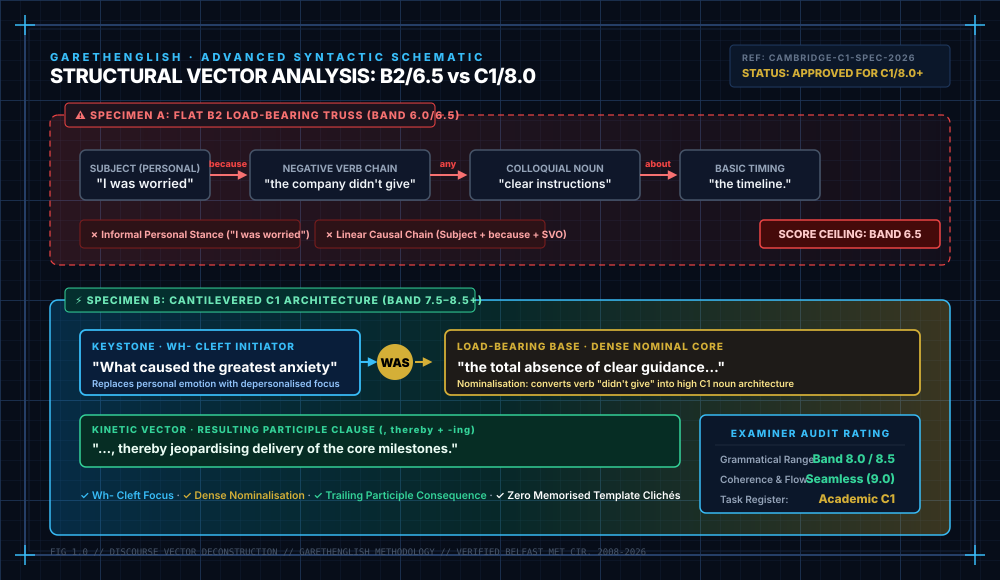

★ Editor’s Masterclass
REV: C1-8.5

FIG 1.0 SYNTAX VECTOR SCHEMATIC
5 REVEAL DRILLS INCLUDED
IELTS & Cambridge C1 Writing
•
12-Min Interactive Masterclass
The Band 6.5 Deadlock: 5 Structural Shifts That Unlock Band 7.5+
Why memorising rare thesaurus words fails under exam pressure—and how to replace flat linear sentences with clefts, negative inversions, passive reporting, and participle clauses.
✓
Examiner Criteria: Why GRA plateaus at 6.5
✓
5 Blueprints: With baseline thought transformations
✓
Anti-Template Rule: How to avoid mechanical penalties
✓
Interactive Models: Cambridge benchmark reveals
Master the 5 Shifts (With Live Drills) →
By Gareth Montgomery • 15 yrs at Belfast Met